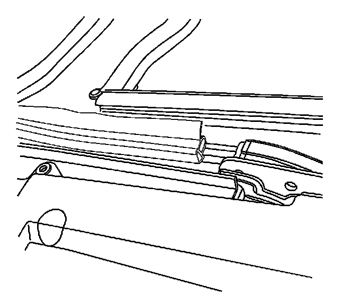

Sunroof Window Weatherstrip Replacement (Inboard Side)
Sunroof Window Weatherstrip Replacement (Inboard Side)
Removal Procedure
1. Remove the front/center/rear sunroof window panels. Refer to Sunroof Window Replacement (Front) (Service and Repair)Sunroof Window Replacement (Rear Vent) (Service and Repair)Sunroof Window Replacement (Center) (Service and Repair)Sunroof Window Replacement (Rear Stationary) (Service and Repair) .

2. Mark the position of the weatherstrip seam to the channel for installation.
3. Remove the weatherstrip from the sunroof by slowly pulling the weatherstrip from the channel.
Installation Procedure
1. Position the weatherstrip end to the marked position on the channel.

Important: Do not stretch the weatherstrip.
2. Insert a portion of the upper edge of the weatherstrip to the upper lip of the channel.
3. Install the lower edge of the weatherstrip into the lower channel pressing into place until fully seated.
Work your way down the sunroof until fully installed.
4. Install the front/center/rear sunroof window panels. Refer to Sunroof Window Replacement (Front) (Service and Repair)Sunroof Window Replacement (Rear Vent) (Service and Repair)Sunroof Window Replacement (Center) (Service and Repair)Sunroof Window Replacement (Rear Stationary) (Service and Repair) .